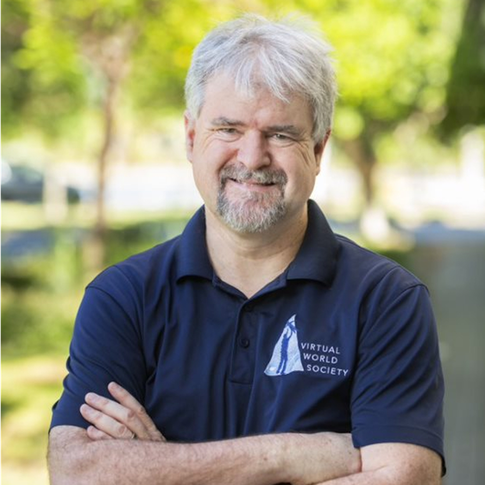

Ballroom A & B & C, Conference Center, Langham Place, Guangzhou, China
China Standard Time (UTC+8)
How does a research idea become a high-quality journal publication? With research topics evolving rapidly and the journal landscape becoming increasingly diverse, how can authors choose the right journal, prepare their manuscripts, respond to reviewer comments, and help build a healthier, more impactful scholarly community?
ICXR 2026 brings together editors-in-chief and editorial representatives from international journals in extended reality and human–computer interaction for a panel discussion, “Meet the Editors-in-Chief”. Covering journal development, academic writing, submission strategies, and peer review, the panel offers early-career researchers, graduate students, and industry researchers an opportunity to engage with journal editors.
Discussion Topics
What emerging research directions are XR journals focusing on?
How can authors identify the right journal for their research?
What makes a paper compelling to editors and reviewers?
How can authors write clear, persuasive manuscripts and cover letters?
How can authors respond effectively to reviewer comments and revise their manuscripts?
What does it take to be a responsible and constructive peer reviewer?
How are AI tools reshaping academic writing, submission, and peer review?
Panelists
Kiyoshi Kiyokawa
Nara Institute of Science and Technology
Associate Editor-in-Chief, IEEE Transactions on Visualization and Computer Graphics (TVCG)
Biography
Kiyoshi Kiyokawa is a Professor at Nara Institute of Science and Technology, where he has served since 2017. He received his M.S. and Ph.D. degrees in information systems from Nara Institute of Science and Technology in 1996 and 1998, respectively. He was a Research Fellow of the Japan Society for the Promotion of Science in 1998, worked at the Communications Research Laboratory, now the National Institute of Information and Communications Technology, from 1999 to 2002, and was a visiting researcher at the Human Interface Technology Laboratory at the University of Washington from 2001 to 2002. He was an Associate Professor at the Cybermedia Center, Osaka University, from 2002 to 2017. His research interests include virtual reality, augmented reality, human augmentation, 3D user interfaces, computer-supported cooperative work, and context awareness. He is a Board Member and Fellow of the Virtual Reality Society of Japan, Associate Editor-in-Chief of IEEE Transactions on Visualization and Computer Graphics, and an inductee of the inaugural class of the IEEE VGTC Virtual Reality Academy.
Helen Petrie
University of York
Editor-in-Chief, Interacting with Computers (IwC)
Biography
Professor Helen Petrie is Professor of Human-Computer Interaction in Computer Science. She has over 20 years of internationally recognized research on new technologies for people with disabilities and older people, with the aim of improving quality of life and well-being. Her current interests include supporting older people to live independently in their own homes for longer. She has contributed to more than 30 British and international projects and has published widely in these areas. Her honors include a Royal Television Society Technical Innovation Prize, a Social Impact Award from the Association for Computing Machinery, and a Lifetime Achievement Award from the Royal National Institute for Blind People. She is a Chartered Psychologist and an Associate Fellow of the British Psychological Society.

Mark Billinghurst
University of South Australia
Editor-in-Chief, Empathic Computing
Biography
Professor Mark Billinghurst is Director of the Australian Research Centre for Interactive Virtual Environments at the University of South Australia and Director of the Empathic Computing Laboratory at the University of Auckland, and the University of South Australia. He earned a PhD in 2002 from the University of Washington and conducts research on how virtual and real worlds can be merged, publishing over 750 papers on Augmented Reality, Virtual Reality, remote collaboration, Empathic Computing, and related topics. In 2013 he was elected as a Fellow of the Royal Society of New Zealand, in 2019 was given the ISMAR Career Impact Award in recognition for lifetime contribution to AR research and commercialization, and in 2023 elected as a Fellow of the IEEE.
Yongtian Wang received his B.Sc. degree in precision instrumentation from Tianjin University, China, in 1982, and his Ph.D. degree in optics from the University of Reading, England, in 1986. He is currently a Professor of Optics and Applied Computer Science at Beijing Institute of Technology and a Chang Jiang Scholar. He serves as Head of the Faculty of Information and Electronics Sciences at Beijing Institute of Technology and Director of the Beijing Engineering Research Center of Mixed Reality and Advanced Display. His research interests include optical design and CAD, optical instrumentation, 3D display, image processing, and virtual reality and augmented reality technologies and applications. He is a Fellow of SPIE, a Fellow of IET, and a Director of the Chinese Optical Society.